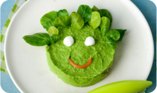
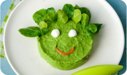

3 cuisiner et savourer
Les recettes délicieuses, faciles et prêtes en un rien de temps. Vous allez régaler toutes les papilles et faire du dîner le meilleur moment de la journée
Minus est une start-up créer par 2 sœurs, Emma et Mathilde, en 2023 .Jeunes mamans actives, le concept de Minus est apparu comme une évidence. À force de jongler avec un planning compliqué et il reste la possibilité des courses livrées à domiciles. Mais la préparation des repas pour des jeunes enfants nécessite une réflexion sur les goûts à découvrir, les portions bien étudiées, les apports en vitamines, calcium, primordiales pour leur croissance, etc..

Emma et Mathilde sont deux mamans actives. Qui on creér le concept de minus dans le but d aider les parents à gagner plus de temps pour les repas de leur enfants

choisissez vos recettes au menu chaque semaine.adapter la taille de votre box au nombre de personnes et de repas que vous souhaitez
Recevez chaque semaine, directement chez vous, une Box remplie d'ingrédients frais et bio, dans les bonnes quantités et de fiches recettes faciles à suivre.

Les recettes délicieuses, faciles et prêtes en un rien de temps. Vous allez régaler toutes les papilles et faire du dîner le meilleur moment de la journée
Nous disposons des nutritionnistes spécialiste de l‘équilibre alimentaire de vos enfants .ils sont disponible pour tous conseil nutritif chez minus.

 
